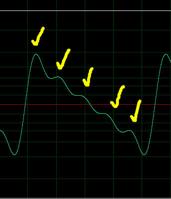
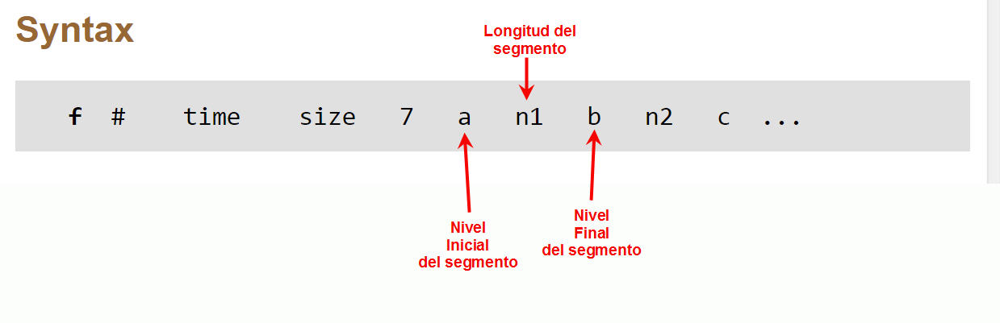
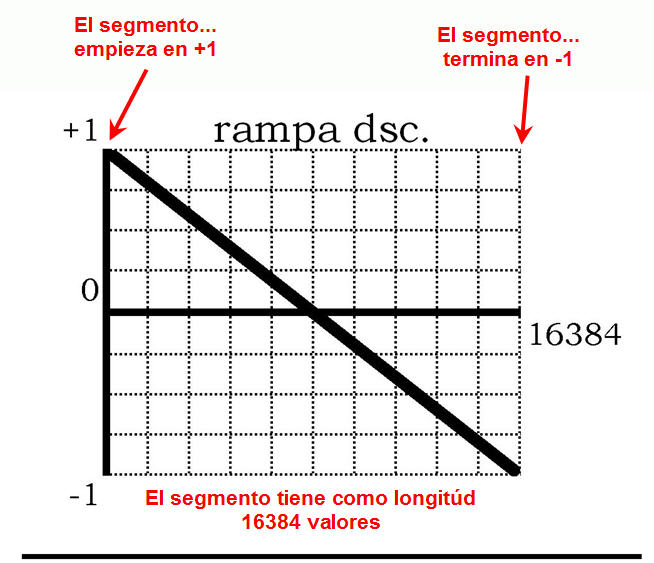
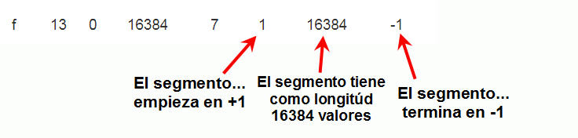
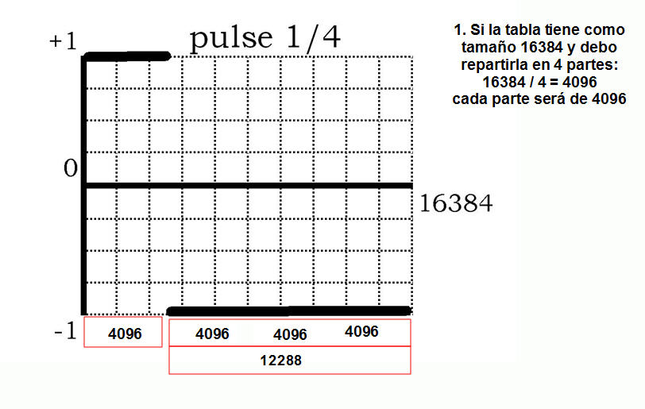

GEN10 y GEN9 tienen en común la limitación, por ejemplo en el caso de la onda rampa, que tenemos que ingresar muchos valores para que nuestra onda rampa sea más "perfecta". Como hemos generado 5 armónicos nuestra forma de onda solo nos muestra eso.

Csound nos ofrece la posibilidad de llenar los datos ingresando segmento lineales, GEN 7.
Las formas de ondas, como las señales de audio, son señales bipolares. En audio digital es más fácil codificarlas con valores normalizados entre -1 a +1. Entonces, si queremos trazar una línea recta para crear una onda sawtooth podemos analizarlo así:

Vamos a crear la tabla 13 para implementarlo:
| f | 13 | 0 | 16384 | 7 | 1 | 16384 | -1 |
Esto es...

Un caso especial es para las formas de ondas que no tienen continuidad como la onda cuadrada o pulso. Analicemos el caso de la onda pulso 25%:

Aparentemente hay dos segmentos lineales, sin embargo debemos ajustar a la sintaxis el trazado de los segmentos:
El segmento 1: Empieza en 1, ternima en 1 y tiene una longitud de 4096 muestras.
El "segmento" 2: Empieza en 1, termina en -1 y tiene una longitud de 0 muestras.
El segmento 3: Empieza en -1, termina en -1 y tiene una longitud de 12288 muestras
| f | 17 | 0 | 16384 | 7 | 1 | 4096 | 1 | 0 | -1 | 12288 | -1 |
También se pude presentar esta solución que evita el "salto al vacío":
| f | 17 | 0 | 16384 | 7 | 1 | 4096 | 1 | 1 | -1 | 12287 | -1 |